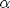
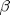

cfaffine
Returns the characteristic function evaluation of a parameterized Affine Jump-Diffusion (AJD) process. Part of the CFH Toolbox.
Syntax
W = CFAFFINE(U,X0,TAU,K0,K1,H0,H1,R0,R1) W = CFAFFINE(U,X0,TAU,K0,K1,H0,H1,R0,R1,L0,L1,jump) W = CFAFFINE(U,X0,TAU,K0,K1,H0,H1,R0,R1,L0,L1,jump,ND)
See theory for a description of the coefficient matrices K0,K1,H0,H1,R0,R1,L0,L1. You may leave any unused coefficient empty [], e.g. CFAFFINE(U,X0,TAU,K0,[],H0,[],R0) describes a system with constant interest rate, drift and variance, whereas CFAFFINE(U,X0,TAU,K0,K1,[],H1,[],R1,[],L1,jump) describes a system with state dependent drift, variance, interest rate and jump intensity.
For real argument U, cfaffine returns the characteristic function of the stochastic process. For complex arugment U=-v*i, cfaffine returns the moment generating function of the stochastic process.
[W alpha beta] = CFAFFINE(U,X0,TAU,K0,K1,H0,H1,R0,R1,L0,L1,jump,ND)
Returns the  and  values, see Theory for details.
Input Arguments
By default, cfaffine expects U to be an array of dimension (K)x(1) or (1)x(K). If U is a (NX)x(K) array, set ND=1, if U is a (K)x(NX) array, set ND=2.
Contents
Example 1: Black Scholes Model
In the Black Scholes model, the dynamics of the logarithmic spot process are:
resulting in the characteristic function
where .
The characteristic function of the Black Scholes model is also included in cflib, using the argument type='BS', which we will use as a yardstick.
rf = 0.05; tau = 1; sigma = 0.25; S0 = 100; x0 = log(S0);
Translating these parameters into arbitrage free coefficients required by cfaffine
K0 = rf-1/2*sigma^2; H0 = sigma^2; R0 = rf;
we obtain the characteristic function
cfNumerical = @(u) cfaffine(u,x0,tau,K0,[],H0,[],R0);
We will compare the numerically obtained characteristic function to its analytical counterpart:
par.rf = rf;
par.sigma = sigma;
par.x0 = x0;
cfTheory = @(u) cflib(u,tau,par,'BS');
Comparing the difference between the numerically obtained and the 'true' characteristic function along its real and imaginary components, we find that cfaffine did quite a good job
u = [0:0.01:10]'; error = cfNumerical(u)-cfTheory(u); plot(u,real(error),'k',u,imag(error),'r') legend('real part','imaginary part') title('Errors from discrete approximation'); xlabel('argument u'); ylabel('error');
Example 2: Chooser option (from DPS2000)
Assume that we want to price an option whose payoff is the maximum of two assets and , . The log assets have the dynamics:
Assuming some parameters, we obtain the coefficients:
tau = 1; X0 = 100; Y0 = 110; rf = 0.05; sX = 0.20; sY = 0.25; rhoX = 0.70; rhoY = 0.30; COV = sX*sY*(rhoX*rhoY + sqrt(1-rhoX^2)*sqrt(1-rhoY^2)); K0 = rf - 1/2*[sX^2 ; sY^2]; H0 = [sX^2 COV ; COV sY^2]; R0 = rf; x0 = log([X0 ; Y0]);
Foreknowing that we will apply the function <cf2gaby.html cf2gaby shortly, we have to make sure that the characteristic function should take an (NX)x(K) input and return an output W of dimension (1)x(K):
cf = @(u) cfaffine(u,x0,tau,K0,[],H0,[],R0,[],[],[],[],1);
We can test this by asking for the discount factor and the risk-neutral expected asset levels:
u0 = [0 1 0 ;
0 0 1];
cf(-i*u0)
ans =
0.9512 100.0000 110.0000
We will now write the payoff in a more comprehensible form and price its components. Let :
We can compute each component using the function cf2gaby which takes the discounted characteristic function as an input and computes expectations of the type
where the vector denotes the state variables. We find that the first summand is just the risk-neutral expectation of . If there are no dividends present, this is , else we would have to compute cf(-i*[1;0]). The second summand is . The last part is .
Combining these, we obtain
cf(-i*[1;0]) + cf2gaby(cf,[0;1],[1;-1],0) - cf2gaby(cf,[1;0],[1;-1],0)
ans = 111.3957
As a check, we perform the exact same analysis, starting at asset :
cf(-i*[0;1]) + cf2gaby(cf,[1;0],[-1;1],0) - cf2gaby(cf,[0;1],[-1;1],0)
ans = 111.3957
which yields the same result.
Example 3: Multiple jumps
cfaffine can also handle a process with multiple jumps. Let slightly change the last example and introduce two jump processes. For easy of exposition, we assume that the first asset is solely influenced by jumps in and is driven by both jump components:
where denotes the risk neutral jump compensation of asset with respect to jump process . We will assume no constant intensity offsets, i.e. with
(Technically, we would have to make sure that the second intensity cannot drop below zero.)
Further, we let the first jump distribution be bivariate normally distributed and the second is assumed to be a non-negative exponential jump
Translate this model into the coefficients of cfaffine:
Raw specification
rf = 0.05; tau = 1; X0 = 100; sigmaX = 0.25; Y0 = 110; sigmaY = 0.20; lambda10 = 0.11; kappa1 = 0.85; theta1 = 0.10; sigma11 = 0.15; lambda20 = 0.06; kappa2 = 1.00; theta2 = 0.075; sigma21 = 0.05; sigma22 = 0.20;
Initial state vector
x0 = [log(X0) log(Y0) lambda10 lambda20]';
Variance coefficients:
H0 = [sigmaX^2 0 0 0 ; 0 sigmaY^2 0 0 ; zeros(2,4)]; H1 = zeros(4,4,4); H1(3:4,3:4,3)= [sigma11^2 sigma11*sigma21 ; sigma11*sigma21 sigma21^2]; H1(4,4,4) = sigma22^2;
Jump components:
L0 = [0 0]; L1 = [0 0 1 0 ; 0 0 0.75 0.25]'; par.MuJ(:,1)= [-0.25 -0.10 0 0]'; par.MuJ(:,2)= [0.0 0.2 0 0]'; par.SigmaJ = [0.2^2 0.2*0.5*0.3 0 0 ; 0.2*0.5*0.3 0.3 0 0 ; zeros(2,4)]; jump1 = @(c) cfjump(c,par,'Merton'); jump2 = @(c) cfjump(c,struct('MuJ',par.MuJ(:,2)),'Exponential'); jump = @(c) [jump1(c) ; jump2(c)];
Drift adjusmtents: m is the jump expectation from each jump distribution minus one.
m = zeros(4,2); m(1,1) = jump1([1 0 0 0]')-1; m(1,2) = jump2([1 0 0 0]')-1; m(2,1) = jump1([0 1 0 0]')-1; m(2,2) = jump2([0 1 0 0]')-1;
Drift coefficients:
K0(1,:) = rf-1/2*sigmaX^2-m(1,:)*L0'; K0(2,:) = rf-1/2*sigmaY^2-m(2,:)*L0'; K0(3,:) = kappa1*theta1; K0(4,:) = kappa2*theta2; K1 = -m*L1'; K1(3,3) = -kappa1; K1(4,4) = -kappa2;
At this point, we might want to check whether the resulting drift is indeed arbitrage-free using cfneutralize. We check whether our drift our coefficients are in line with those recovered from a risk neutralization. The resulting maxErr should be zero:
[K0q K1q] = cfneutralize(K0,K1,H0,H1,rf,[],[0 0],[],L0,L1,jump); maxErr = max(max(abs([K0-K0q K1-K1q])))
maxErr =
0
We may now combine everything into a characteristic function:
cf = @(u) cfaffine(u,x0,tau,K0,K1,H0,H1,rf,[],L0,L1,jump,1);
First, let us check wether the resulting cf recovers the discount factor and the initial asset prices:
u0 = -i*[0 1 0 ; 0 0 1 ; 0 0 0; 0 0 0]; cf(u0)./[exp(-rf*tau) X0 Y0]
ans =
1.0000 1.0000 1.0000
As above, we will use the function cf2gaby to price the maximum option:
cf(-i*[1;0;0;0]) + cf2gaby(cf,[0;1;0;0],[1;-1;0;0],0) - cf2gaby(cf,[1;0;0;0],[1;-1;0;0],0)
ans = 120.6305
As a check, we perform the exact same analysis, starting at asset :
cf(-i*[0;1;0;0]) + cf2gaby(cf,[1;0;0;0],[-1;1;0;0],0) - cf2gaby(cf,[0;1;0;0],[-1;1;0;0],0)
ans = 120.6305
which yields the same result.